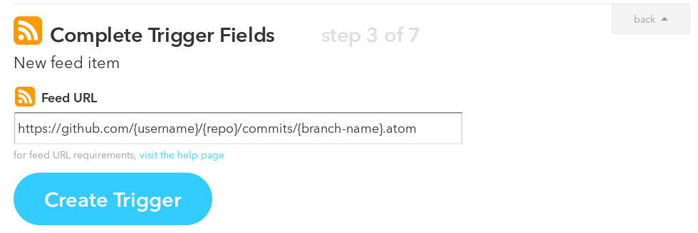

Using IFTTT to run a Test Suite when a Dependency is Updated
Software that uses other software
Most software is more or less dependent on the way another piece of software behaves. For software that tries to maintain compatibility with all versions of an application including the newest it makes sense to run a testsuite, confirming compatibility, whenever the other application is updated.
If This Then That (IFTTTT) can be used to listen for all new commits on Github and make an API call when a new commit is added. In this case, I have used CircleCI, but it should work for any CI system that allows starting a build using an API.
Starting a testsuite on updates for dependent projects
Github has an RSS feed for all commit in a repository at
https://github.com/{username}/{repo}/commits/{branch-name}.atom. To use new
commits as a Trigger, the RSS integration can be used.

CircleCI allows starting a build using a POST request at:
https://circleci.com/api/v1/project/{username}/{yapfify}/tree/master?circle-token={api-token}
To use that as an Action, the Maker integration can be used.